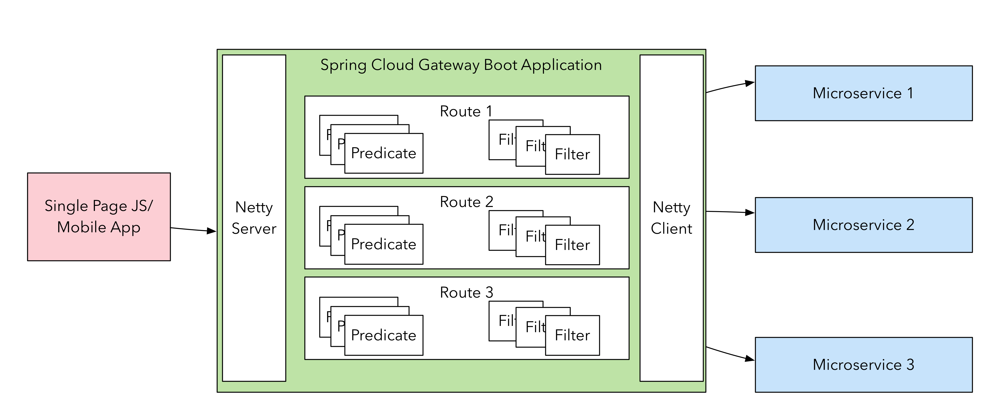

Spring Cloud Gateway
Biju Kunjummen
Generously borrowed content from Spencer Gibb, Sree Tummidi's Spring One Presentation
What is an API Gateway
Analogous to Filters
Gateway
Sample From JHipster Project
Responsibilities
- Routing
- Resiliency
- Monolith Strangling
- Security
- Rate Limiting/Throttling
- Monitoring
- Surgical Routing
- Canarying
- Flexibility
Zuul
- Servlet Based
- Blocking API
- Not Dev friendly
Foundations
- Spring 5
- Reactor
- Netty - Non-Blocking IO
- Spring Boot 2
Async & Non-Blocking - What does it mean
Non-Blocking Event Loop
 More Content
More Content